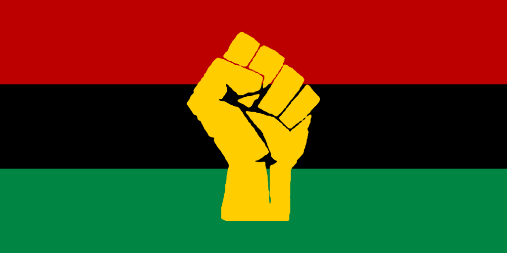

Unit Overview
This unit explores the governmental policies, wars, and conflicts that have shaped the modern borders and governments of Southern Africa. We will explore the decolonization of the region, and the political effects of the apartheid, with a case study on the African national Congress. Alongside this, we will study the different ideologies and resistance against pan-africanism. We will also explore the processes used by the governments today.
4.1: A Newly Independent Region
This section will explore Southern Africa’s decolonization movements and how new forms of government developed to stabilize the region.
3.2: Distribution and Tension Among Ethnicities
This section details the spatial patterns of various religions and ethnicities, as well as how this affects their Interactions and conflicts. This will include a case study of the Gukurahundi massacres, a notable example of ethnic turmoil.
3.3: Diffusion of Cultures Migration
This section will dive into the region’s most prominent cultures, as well as how they spread between and within nations.
3.4: Social Effects of Apartheid
This section explores how racial discrimination during apartheid changed the cultures of various countries, superseding just South Africa. This section will include a case study of the cultural consequences of apartheid.
Instructional Tool - Mock Debate
Students will participate in a Mock Debate between supporters of Pan-Africanism and Ethnonationalism.
Case Study - African National Congress
The African National Congress was established in 1912 in order to provide a political party for the native africans of South Africa. Throughout their years of existence, the ANC led many campaigns, both non-violent and violent in order to disturb and upheave the white led National Party that imposed Apartheid over South Africa. The ANC also became involved in other conflicts like the Rhodesian Bush War, and South African Border War. THeir leader, Nelson Mandela was thrown in jail until the National Party finally stepped down in 1990, leading to Mandela’s release, and a fully democratic nation by 1994, led by Mandela himself. APESA will explore the past of the ANC, their processes, and what they did that shaped South Africa for what it is today.